Configuración de Confort
Configuración de Confort
A/C
• El A/C puede funcionar en un modo de ahorro de energía para reducir el consumo de energía y extender la autonomía.
Modo A/C
En la esquina inferior derecha de la interfaz de Configuración de A/C, toca " " para seleccionar diferentes modos inteligentes de A/C según la situación.
El efecto de enfriamiento o calentamiento del aire acondicionado se verá afectado cuando se encienda.
Consejos
- Limpieza inteligente
• Después de que el vehículo se desbloquea, puede detectar inteligentemente la acumulación de agua en el sistema de A/C y activar la función de limpieza inteligente para reducir la proliferación de bacterias y reducir la probabilidad de olor en el vehículo.
Consejos
- Renovación
• Elimina rápidamente los olores del vehículo con ventilación eficiente.
Requiere una cierta cantidad de energía para ser consumida cuando se enciende, con un pequeño impacto en la vida útil de la batería.
- Modo de ahorro de energía

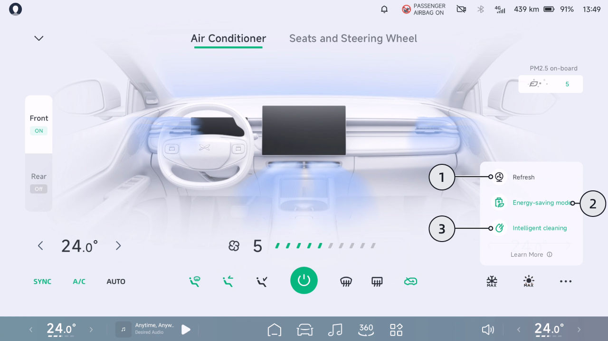
Configuración de Confort
Purificación de Aire
Puedes salir de la purificación de aire de cualquiera de las siguientes maneras:
La función de purificación de aire determina la calidad del aire exterior mediante sensores y red, mostrando los datos en la interfaz de A/C.
• Durante la purificación, toca el icono de purificación de aire en la esquina superior izquierda de la interfaz de control de A/C nuevamente para detener la purificación.
La purificación de aire se puede activar de las siguientes maneras:
• Durante la purificación de aire, apaga el A/C y enciende el descongelador frontal para salir de la purificación.
• Di a Xpeng: purificación de aire.
• Durante la purificación de aire, enciende el calentamiento rápido, enfriamiento rápido y renovación para salir de la purificación.
Ajuste de Rejillas de Aire
Las rejillas de aire en el frente y la parte trasera se pueden ajustar manualmente.
• Toca el área debajo de PM2.5 en la pantalla de control central para iniciar la purificación.
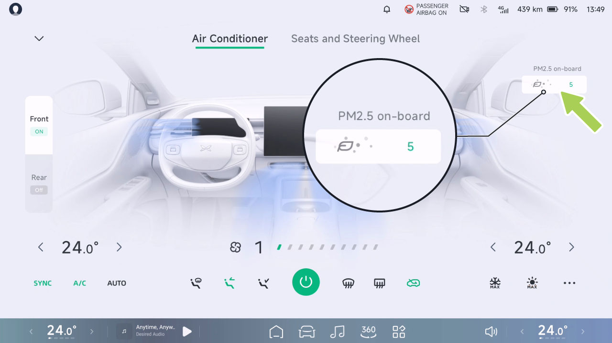
Configuración de Confort
Ajustar rejilla de aire lateral de la primera fila
Ajuste de la rejilla de aire frontal de la consola
Ajusta el flujo y dirección de aire de la rejilla deslizando a la izquierda o derecha, ajusta la dirección deslizando hacia arriba o hacia abajo, y cierra la rejilla de aire deslizando completamente a la izquierda o derecha.
Ajusta el flujo y dirección de aire de la rejilla deslizando a la izquierda o derecha, ajusta la dirección deslizando hacia arriba o hacia abajo, y cierra la rejilla de aire deslizando completamente a la izquierda o derecha.
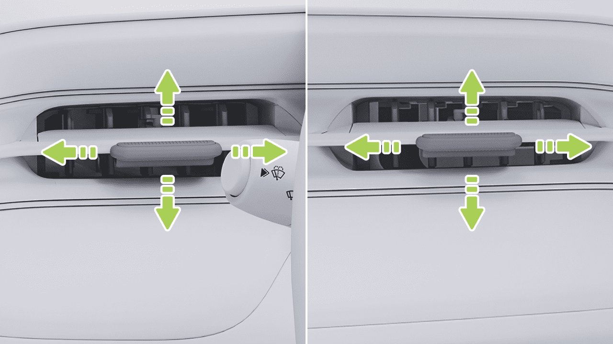
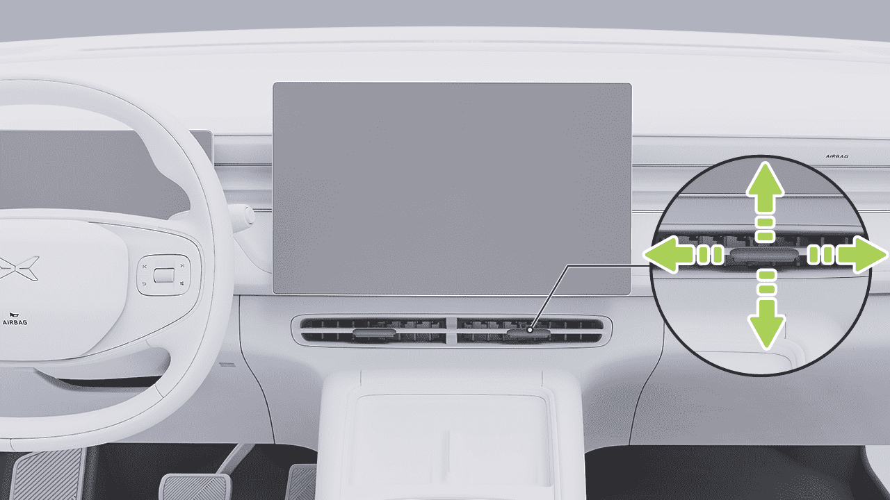
Configuración de Confort
Ajuste de la rejilla de aire trasera
Pantalla de Visualización
Ajusta el flujo y dirección de aire de la rejilla deslizando a la izquierda o derecha, ajusta la dirección deslizando hacia arriba o hacia abajo, y cierra la rejilla de aire deslizando completamente a la izquierda o derecha.
- Interruptor de aire acondicionado frontal/trasero
• Haz clic en "Primera Fila/Última Fila" para cambiar a la interfaz de configuración de aire acondicionado frontal/trasero.
• Muestra el estado del aire acondicionado frontal/trasero encendido.
- PM2.5
• Haz clic en la tarjeta para activar/desactivar la purificación de aire.
• Muestra la calidad del aire fuera del vehículo.
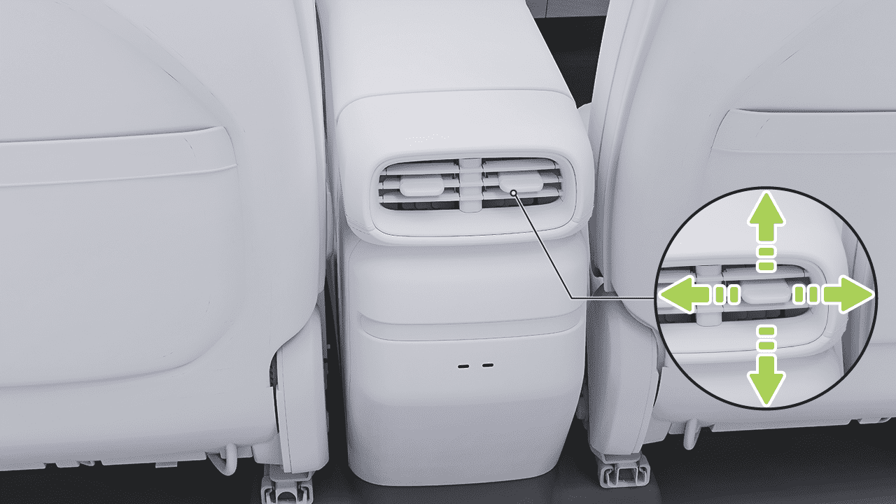
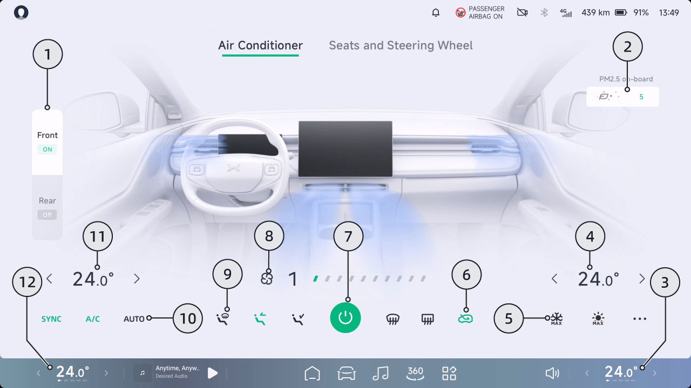
Configuración de Confort
- Componentes del aire acondicionado del pasajero
Para mejorar la experiencia de comodidad, se recomienda encender el aire acondicionado de forma remota a través de la aplicación móvil para un enfriamiento/calentamiento rápido en verano (temperatura alta) o invierno (temperatura baja).
• Muestra la temperatura actual y el estado del volumen de aire del aire acondicionado del lado del pasajero.
• Ajusta el aire acondicionado del pasajero.
• Modo Inteligente
-
Ajustar la temperatura del pasajero
-
Control de temperatura ultrarrápido/aire acondicionado inteligente
-
Descongelación por calor/circulación interna y externa
• : Encender/apagar el descongelante del parabrisas.
• Enfriamiento extremo: Cuando se enciende, la temperatura del aire acondicionado se ajustará al mínimo, el volumen de aire se ajustará a un nivel alto y la función de ventilación del asiento se encenderá automáticamente.
• : Encender/apagar la calefacción y descongelación del parabrisas trasero y la calefacción y descongelación del espejo retrovisor exterior.
Durante el proceso de calefacción, si el voltaje de la batería de 12V es inferior a 9V, el sistema apagará automáticamente la función de calefacción.
• Calefacción extremadamente rápida: Después de encenderlo, la temperatura del aire acondicionado se ajustará al nivel máximo, el volumen de aire se ajustará a un nivel alto y las funciones de calefacción del asiento y calefacción del volante se encenderán automáticamente.
• Cuando el vehículo no está encendido, está prohibido usar la función de calefacción y descongelación durante mucho tiempo para evitar que la batería de 12V se agote
Configuración de Comodidad
y no poder encender el vehículo.
Cuando se selecciona el modo horizontal de ahorro de energía, la sincronización de temperatura se enciende automáticamente.
• Cuando la función de calefacción y descongelación está activada, no la toque con las manos.
• A/C: Encienda el aire acondicionado para enfriar o calentar.
• AUTO: Después de encenderlo, el aire acondicionado se controlará automáticamente según la temperatura establecida.
• : Cambiar entre circulación interna y externa.
- Encender/apagar el aire acondicionado frontal
Se recomienda no encender el sistema de aire acondicionado durante la carga.
-
Ajustar la temperatura de conducción principal
-
Ajustar el volumen de aire
-
Componentes del aire acondicionado del conductor
• Muestra la temperatura actual y el estado del volumen de aire del aire acondicionado del conductor principal.
• Ajusta el aire acondicionado del conductor principal.
• 9. Modo de soplado
• : Soplado de ventanas.
• : Soplado facial.
• : Soplado de pies.
- Modo de aire acondicionado
• Haga clic en "SYNC" Abrir/cerrar la temperatura del asiento del conductor y la temperatura del asiento del pasajero para ajustar sincronizadamente.
Configuración de Comodidad
Volante
• Gire hacia arriba y hacia abajo para ajustar la temperatura del A/C.
Tecla del Volante
• Mantén presionada para entrar en el modo de cambio de tarjeta en la pantalla izquierda del panel de instrumentos, desplázate hacia arriba o hacia abajo para seleccionar tarjetas y toca para confirmar tu selección.
• Cuando ACC/LCC está activado, desplázate hacia arriba o hacia abajo para ajustar la velocidad del vehículo de forma incremental.
• Después de activar el ajuste del espejo lateral, desplázate hacia arriba y hacia abajo para girar el espejo lateral izquierdo.
• En la interfaz de ajuste del Espejo Retrovisor de Transmisión*, desplázate hacia arriba y hacia abajo para ampliar o reducir el campo de visión del Espejo Retrovisor de Transmisión.
1. Botones izquierdo y derecho:
• Por defecto: Ajusta la velocidad del soplador del aire acondicionado.
• Con ACC/LCC activado, ajusta la distancia de crucero.
- Tecla de acceso directo del volante:
• Después de activar el ajuste del espejo lateral, controla el espejo lateral izquierdo para girar hacia la izquierda o hacia la derecha.
Toca y mantén esta tecla presionada para establecer su función, y tócala para ejecutar la función establecida.
-
Botón de activación por voz:
-
Botones de desplazamiento superior e inferior:
Activa o cancela la voz de Xpeng.
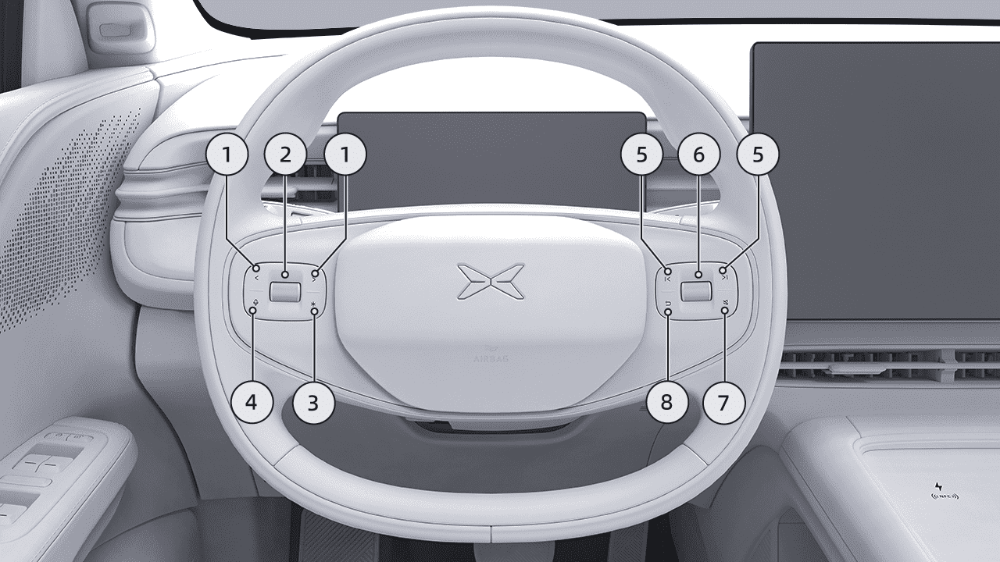
Configuración de Confort
- Botón de canción anterior o siguiente:
• En la interfaz de ajuste del Espejo Retrovisor de Transmisión*, desplázate hacia arriba y hacia abajo para ajustar las posiciones superior e inferior del campo de visión del Espejo Retrovisor de Transmisión.
• Toca para reproducir la estación de radio, capítulo o canción anterior o siguiente.
• Después de activar el ajuste del espejo lateral, controla el espejo lateral derecho para girar hacia la izquierda o hacia la derecha.
-
Botón de silencio: toca para silenciar o activar el sonido.
-
Botones de desplazamiento superior e inferior:
-
Tecla de retorno.
• Desplázate hacia arriba y hacia abajo para ajustar el volumen multimedia.
Claxon
• Toca reproducción multimedia, pausa o ventana emergente para confirmar.
• Toca y mantén presionada para entrar en el estado de selección de tarjeta en el lado derecho del panel de instrumentos.
• Cuando hay una llamada telefónica, desplázate hacia arriba/abajo para seleccionar Responder/Rechazar y toca la rueda de desplazamiento para confirmar. Durante la llamada, tócalo para colgar.
• Después de activar el ajuste del espejo lateral, desplázate hacia arriba y hacia abajo para girar el espejo lateral derecho.
Toca el área del símbolo del claxon para sonar el claxon.
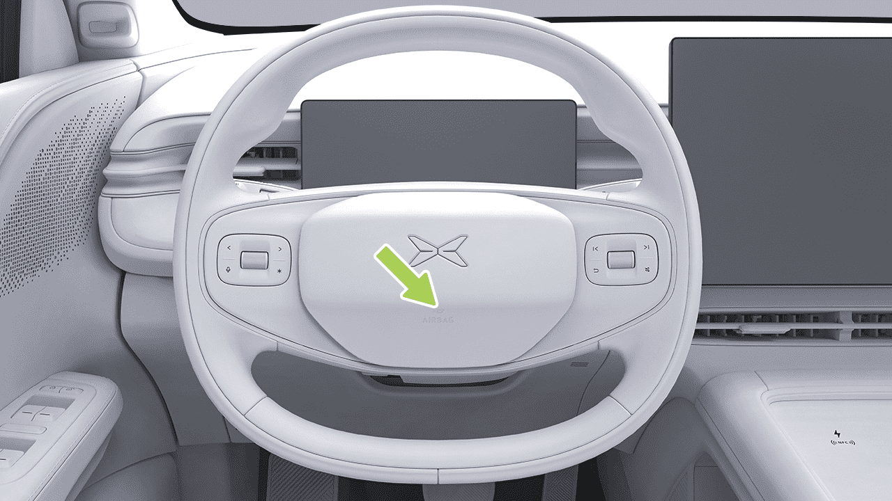
Configuración de Confort
precaución
Tecla de acceso directo del volante
No presiones el área de identificación del claxon durante períodos prolongados, ya que esto puede dañar el claxon.
Función de emergencia de la tecla
Toca y mantén presionado el botón de activación por voz y el botón de silencio al mismo tiempo para reiniciar el panel de instrumentos y la pantalla de control central.
Esta función se puede usar temporalmente en casos como visualización anormal del panel de instrumentos o pantalla de control central y congelación repentina de pantalla. Si el fallo persiste después del reinicio, ponte en contacto con el Centro de Servicio de XPENG para mantenimiento en el momento oportuno.
Toca y mantén presionada la tecla de acceso directo del volante o ve a " →Conducción→Acceso Directo del Volante" en la interfaz de la pantalla de control central. Puedes establecer la función de la tecla de acceso directo del volante.
Calefacción del Volante
El volante climatizado se puede controlar de las siguientes formas:
• Tecla de Aplicación Móvil
• Asistencia de Voz de Xpeng

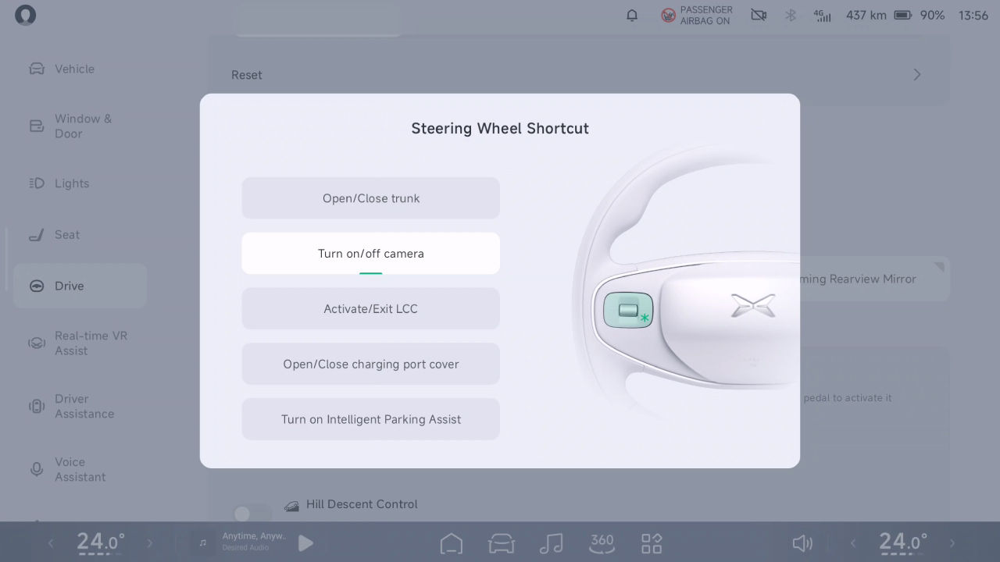
Configuración de Comodidad
• CID
• Voz Xpeng
• Clave de aplicación móvil
– Barra de tareas inferior (según se configure)
– Interfaz de configuración
• Interfaz de configuración de la pantalla de control central
Interfaz de configuración de CID
Consejos
En la interfaz de configuración del aire acondicionado véase página 252, haga clic en "Asientos y Volante" para acceder a la interfaz de configuración.
• No cambie de ventana repetidamente en un corto período de tiempo, ya que esto activará la protección térmica de la ventana. La función de elevación de la ventana fallará después de la protección térmica. Espere aproximadamente 2 minutos antes de operar.
Haga clic en " " para activar la función de calefacción del volante, configure la marcha a la 3ª marcha y haga clic repetidamente para alternar entre la 2ª marcha, 1ª marcha, apagado y 3ª marcha.
• Cuando la ventana está cerrada, si se encuentra un obstáculo en el área anti-atrapamiento, la ventana dejará de cerrarse e invertirá su movimiento una distancia.
Ventana
• Si la ventana se cierra con un toque y la función anti-atrapamiento está deshabilitada, se puede realizar la inicialización de la ventana.
Introducción
Las ventanas pueden abrirse o cerrarse de las siguientes formas:
advertencia
• Interruptor de ventana
– Interruptor de ventana del lado del asiento del conductor
• Para garantizar la seguridad cuando hay niños en el vehículo, bloquee el vidrio del pasajero hacia arriba y hacia abajo para evitar que los niños operen las ventanas y evitar pellizcos.
– Interruptor de ventana del lado del pasajero
Configuración de Comodidad
• Aunque las ventanas están equipadas con anti-atrapamiento, aún existe riesgo de pellizco al cerrar las ventanas. No use ninguna parte de su cuerpo para bloquear el cierre de las ventanas para activar el anti-atrapamiento.
Operación
Interruptor de ventana del lado del asiento del conductor
• Antes de cerrar las ventanas, el conductor debe asegurarse de que todos los pasajeros, especialmente los niños, no sobresalgan ninguna parte de su cuerpo fuera de la ventana. ¡De lo contrario, existe riesgo de pellizco!
• Cuando se activa la función de bloqueo automático de ventanas, las ventanas se cerrarán automáticamente cuando el vehículo se bloquee. Asegúrese de que las ventanas no atrapen a ocupantes u obstrucciones y de que no haya ocupantes en el vehículo, especialmente niños. Luego bloquee.
-
Interruptor de regulador de ventana de la puerta delantera izquierda
-
Interruptor de regulador de ventana de la puerta delantera derecha
-
Interruptor de bloqueo del regulador de vidrio de la puerta del pasajero
-
Interruptor de regulador de ventana de la puerta trasera derecha
-
Interruptor de regulador de ventana de la puerta trasera izquierda
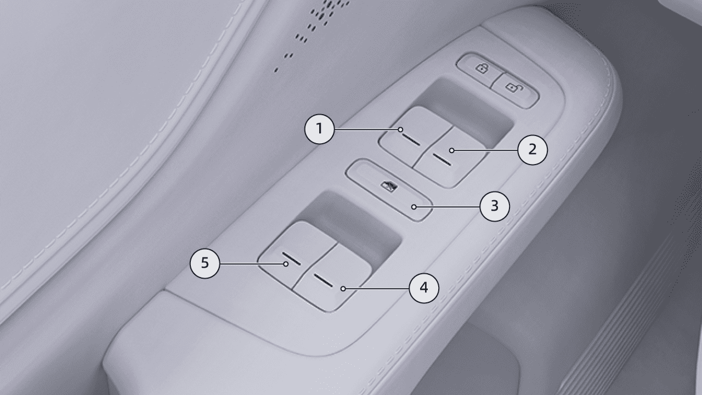
Configuración de Comodidad
Interruptor de ventana del lado del pasajero
Las otras puertas están deshabilitadas y todas las ventanas solo pueden ajustarse mediante el interruptor de ventana de la puerta del conductor.
Interfaz de configuración de la pantalla de control central
Tire del interruptor del regulador de ventana hacia arriba/abajo hasta la segunda marcha, y la ventana se moverá automáticamente a la posición completamente cerrada/abierta.
Tire del interruptor del regulador de ventana hacia arriba/abajo hasta la primera marcha y manténgalo en esta posición. Luego, la ventana comienza a subir/bajar. Suelte el interruptor y la ventana dejará de moverse.
En la pantalla de control central, vaya a " →Ventana y Puerta→Ajuste de Ventana" interfaz, y puede configurar "Abrir Todo, Ventilar o Cerrar Todo". También puede deslizar hacia arriba y hacia abajo en el área de ventana para el ajuste.
Cuando la función de deshabilitación del interruptor de ventana del pasajero está activada, el indicador en el interruptor se ilumina. En este momento, los interruptores de ventana en

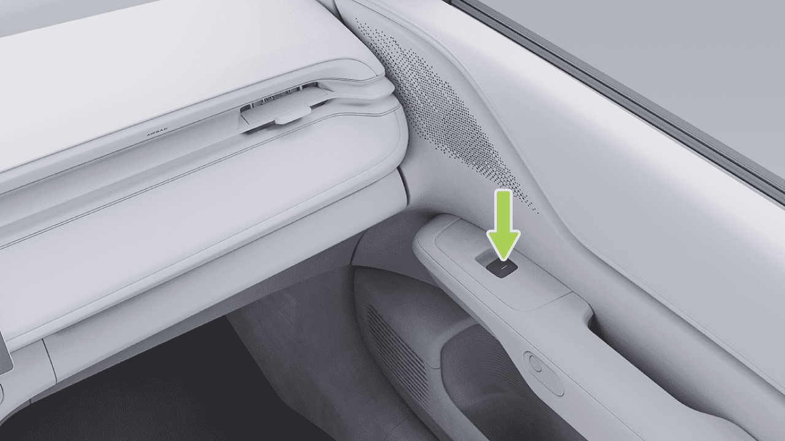
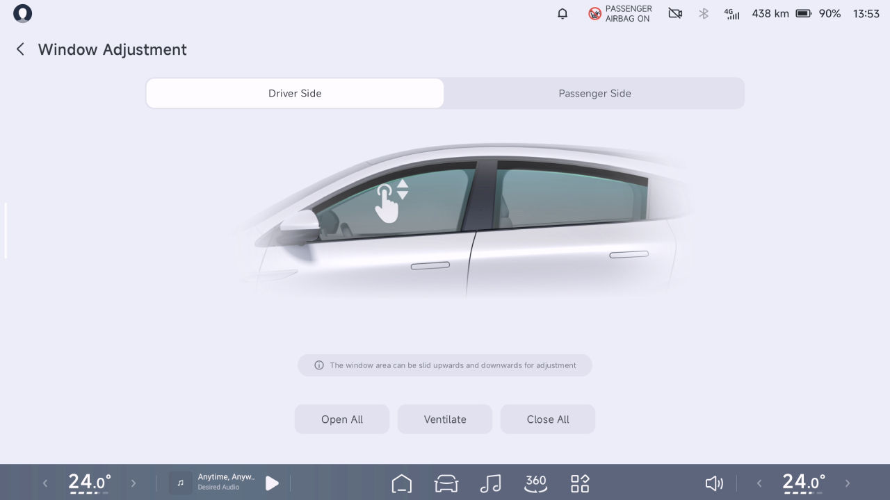
Configuración de Confort
Consejos
cerrada en conducción a alta velocidad y cuando se conduce a alta velocidad.
Cuando los bloqueos de ventana están abiertos, los interruptores de ventana en las otras puertas están deshabilitados y todas las ventanas solo se pueden ajustar desde los interruptores de ventana del lado del conductor.
Inicialización de la ventana
La inicialización de la ventana se puede realizar si la función de la ventana es anormal (como falla de subida o bajada de una tecla, ajuste de pantalla de control central y voz):
Bloqueo de ventana
En la pantalla de control central, vaya a " →Ventana y Puerta→Modo Bebé en Auto" interfaz, y puede activar o desactivar el bloqueo de ventana.
1. Encienda el vehículo y cierre la puerta. Tire suavemente del interruptor de ventana a la posición de primer engranaje (modo manual hacia arriba), cierre completamente todas las ventanas y mantenga durante 3 segundos, luego suelte.
Cierre automático de ventanas
En la pantalla de control central, vaya a " →Ventana y Puerta" interfaz, y puede activar o desactivar las funciones "Cerrar Ventanas Automáticamente después de Bloquear el Vehículo" y "Cerrar Ventanas Automáticamente al Viajar a Alta Velocidad".
- Presione firmemente el interruptor de ventana a la posición de segundo engranaje y suéltelo (modo automático hacia abajo). La ventana se bajará automáticamente a la posición de abierto todo y se detendrá.
Consejos
- Tire firmemente del interruptor de ventana hacia arriba a la posición de segundo engranaje (modo automático hacia arriba), y se detendrá después de alcanzar la posición completamente cerrada.
Se recomienda activar el modo de ciclo externo cuando la ventana se cierra automáticamente

Configuración de Confort
Los siguientes pasos pueden determinar si el aprendizaje de inicialización se ha completado. Si todos los pasos funcionan normalmente, la inicialización es exitosa:
Parasol y Espejo de Vanidad
Introducción
1. Siguiendo el procedimiento en el paso dos anterior, verifique si la ventana puede bajar automáticamente a la posición completamente abierta.
Parasol
- Siguiendo el procedimiento en el paso tres anterior, verifique si la ventana puede subir automáticamente a la posición completamente cerrada.
PRECAUCIÓN
• El proceso de configuración de apertura y cierre global toma menos de 15 segundos.
• La configuración de apertura y cierre global debe completarse en sucesión; solo uno de estos pasos puede causar que la función anti-trampa falle y requiera dos pasos consecutivos para evitar este riesgo.
El parasol se puede girar hacia abajo en la dirección de la flecha para bloquear la luz solar que entra a través del parabrisas delantero.
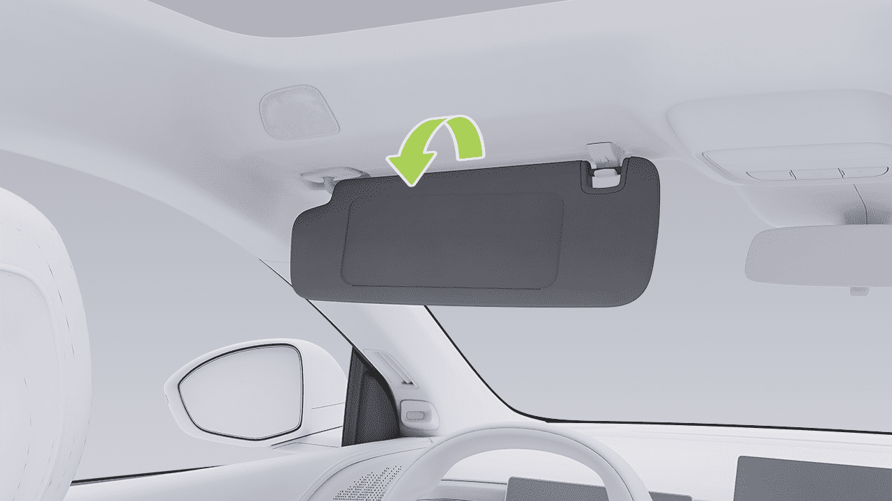
Configuración de Confort
Espejo de vanidad
Después de bajar la visera del sol, saca uno de los extremos de la visera del sol, que se encuentra cerca del espejo retrovisor interior, del soporte y gira la visera del sol hacia la ventana para bloquear la luz del sol que entra por la ventana.
Las viseras del sol en ambos lados del conductor y del pasajero delantero están equipadas con espejos de cortesía, permitiéndote refrescar tu apariencia.
advertencia
• Puedes desplegar la visera del sol a una posición adecuada, bajar la tapa del espejo de cortesía (que también puede estar magnéticamente unida al dorso de la visera del sol) y encender la luz del espejo de cortesía.
Una visera del sol inclinada puede afectar la vista hacia adelante, si ya no es necesario usar la visera del sol, debe ser retraída hacia el soporte.
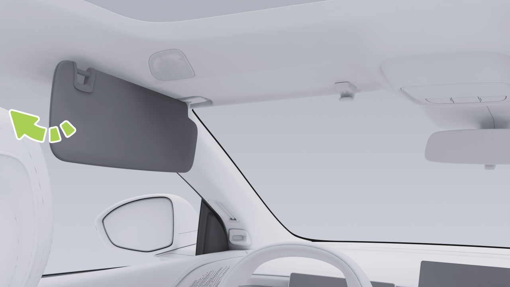
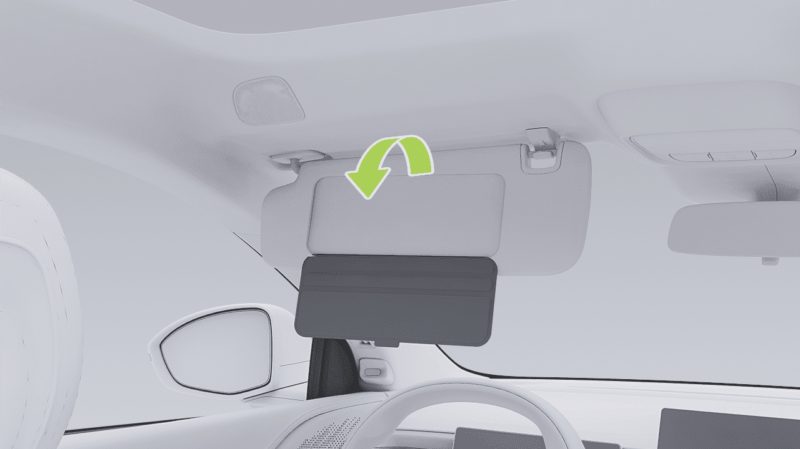
Configuración de Comodidad
• Después de que la tapa del espejo de cortesía esté cerrada, la luz del espejo de cortesía se apagará y luego podrás plegar la visera del sol.
Techo Panorámico
Introducción
• Cierra la tapa del espejo de cortesía cuando no esté en uso.
Consejos
• Si la tapa del espejo de cortesía ha sido magnetizada al dorso de la visera, cuando el espejo de cortesía no esté en uso, ajusta la visera a la posición de no uso para apagar la lámpara del espejo de cortesía.
advertencia
No utilices el espejo de cortesía mientras conduces el vehículo.
El vehículo está equipado con un techo panorámico, ofreciendo una vista más amplia y un recubrimiento aislante del calor para mejorar tu experiencia de conducción.
precaución
La temperatura del techo panorámico aumenta después de que el vehículo ha estado expuesto al sol, no lo toques, ya que existe riesgo de quemaduras.
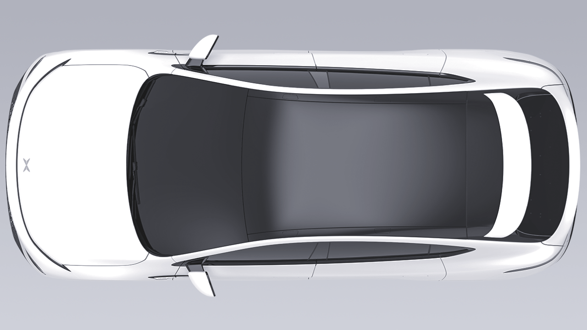
Configuración de Comodidad
Luz de Lectura
Operación
Introducción
Interruptor de Luz de Lectura
Luz de Lectura Frontal
Puedes encender o apagar la luz de lectura de las siguientes maneras:
• Interruptor de luz de lectura • Pantalla de control central – Interfaz de configuración • Voz Xpeng
Consejos
La luz de lectura se enciende automáticamente cuando se abre la puerta, y la luz de lectura se apaga automáticamente cuando se cierra la puerta.
La luz de lectura está instalada en el conjunto de luz de domo frontal. Se encenderá tocando la pantalla de luz, y se apagará tocando la pantalla de luz de nuevo.
No enciendas las lámparas de lectura frontales mientras conduces con poca luz ambiental, la pantalla frontal puede reflejarse, resultando en un incidente de seguridad donde la carretera adelante no es visible.
advertencia
Luz de Lectura Trasera
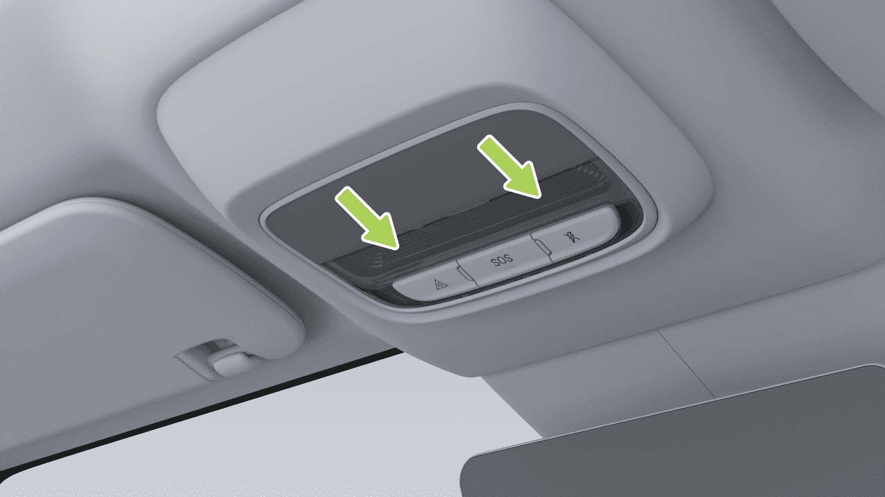
Configuración de Comodidad
Interfaz de Configuración de Pantalla de Control Central
Presiona el botón de luz de lectura correspondiente en cualquiera de los lados para encender la luz de lectura, y presiona de nuevo para apagarla.
En la pantalla de control central, ve a " →Lights→Headlights" interfaz, y puedes encender o apagar "Reading Lights".
Luces Ambientes
Introducción
El vehículo está equipado con luces ambientes que pueden cambiar de color en sincronía con el ritmo de la música,

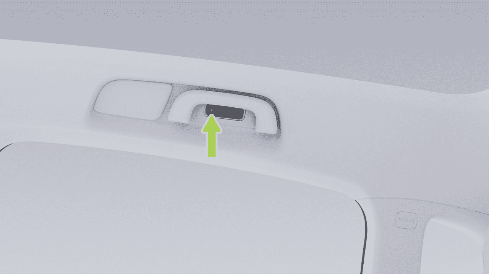
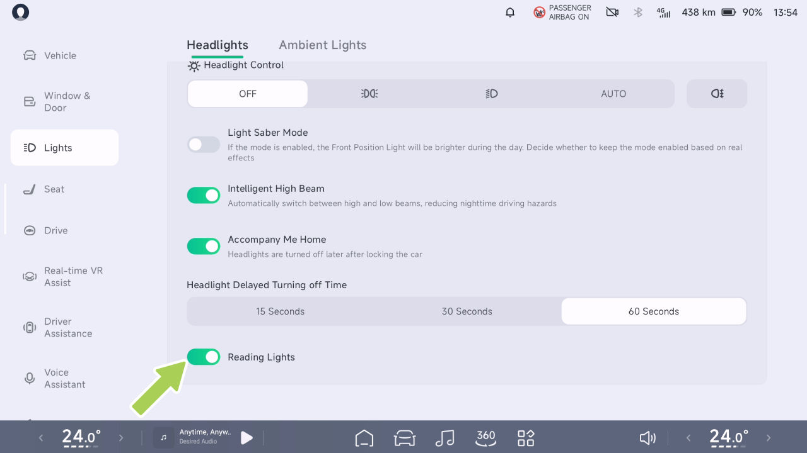
Configuración de Comodidad
agregando un toque cálido a tu regreso a casa mientras cae la noche.
opciones de color único fijo o ciclos de dos colores según el modo.
Abriendo y cerrando
En la opción de color único fijo, el color del área principal y el color del área auxiliar se pueden seleccionar por separado, o se puede sincronizar un solo color en todo el vehículo.
Modo de luz ambiental
Las luces ambientales ofrecen cuatro configuraciones de modo: Brillo Fijo, Respiración Suave, Sigue la Velocidad y Ritmo Musical. Puedes elegir lo que te guste en la interfaz de control de Luces Ambientales.
Calefacción de Asientos*
En la pantalla de control central, ve a " →Luces→Luces Ambientales" interfaz, y puedes configurar las luces ambientales.
Introducción
Puedes controlar la calefacción del asiento de las siguientes maneras:
Ajuste de brillo y selección de color
• Tecla de aplicación móvil
Una vez que las luces ambientales están encendidas, puedes ajustar su brillo manualmente. El color de las Luces Ambientales se puede seleccionar como color de tema,
• Voz Xpeng
• CID

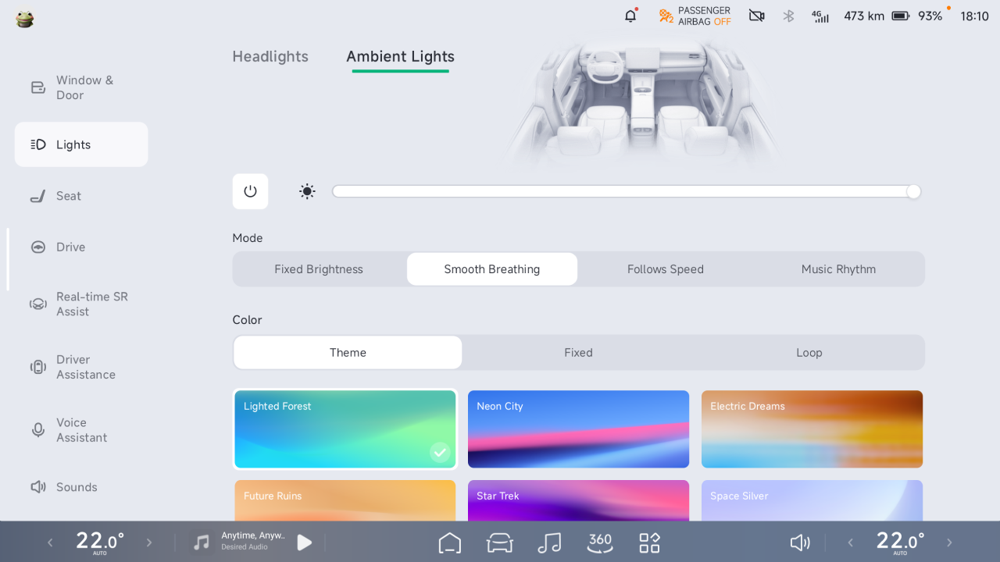
Configuración de Comodidad
– Barra de tareas inferior (si está configurada)
La barra de tareas inferior solo admite el control de la calefacción del asiento del conductor/pasajero.
Consejos
– Interfaz de configuración
Operación
En la interfaz de configuración del aire acondicionado Consultar página 252, haz clic en "Asientos y Volante" ingresa a la interfaz de configuración.
Interfaz de configuración de CID
haz clic en " " Activa la función de calefacción del asiento correspondiente, el nivel está en nivel 3, y haz clic repetidamente para ciclar entre niveles 2, 1, apagado y 3.
• Si el conductor o pasajero no puede sentir dolor en el área de su cuerpo que está en contacto con el asiento, no utilices la función de calefacción del asiento, ya que esto puede resultar en lesiones personales.
• El uso prolongado de asientos calentados a alta velocidad puede causar fácilmente daño por baja temperatura.
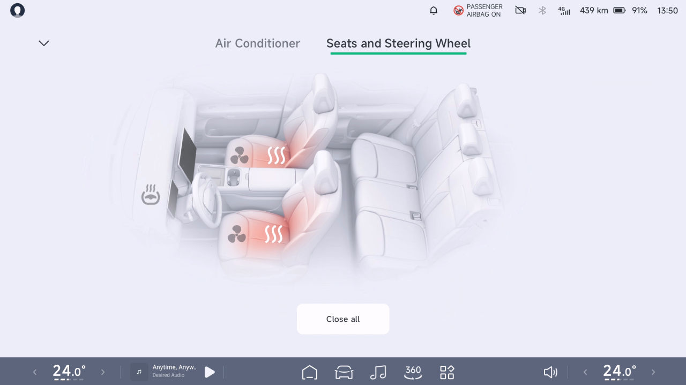
Configuración de Comodidad
• Usar el calefactor del asiento del conductor durante mucho tiempo puede inducir somnolencia y afectar la seguridad de conducción.
Ventilación de Asientos*
Introducción
Puedes controlar la ventilación del asiento de las siguientes maneras:
• Tecla de aplicación móvil
• Voz Xpeng
Toca " " para activar la función de ventilación del asiento correspondiente. Cuando se establece en Nivel 3, puedes tocarlo repetidamente en un ciclo de Nivel 2, Nivel 1, Apagado y Nivel 3.
• Pantalla de control central
– Barra de tareas inferior (si está configurada)
– Interfaz de configuración
Masaje de Asientos*
Operación
Introducción
Interfaz de configuración de CID
En la interfaz de Configuración de A/C, toca "Asientos y Volante" para ingresar a la interfaz de configuración
Puedes controlar el masaje del asiento de las siguientes maneras:
• Voz Xpeng
• Pantalla de control central
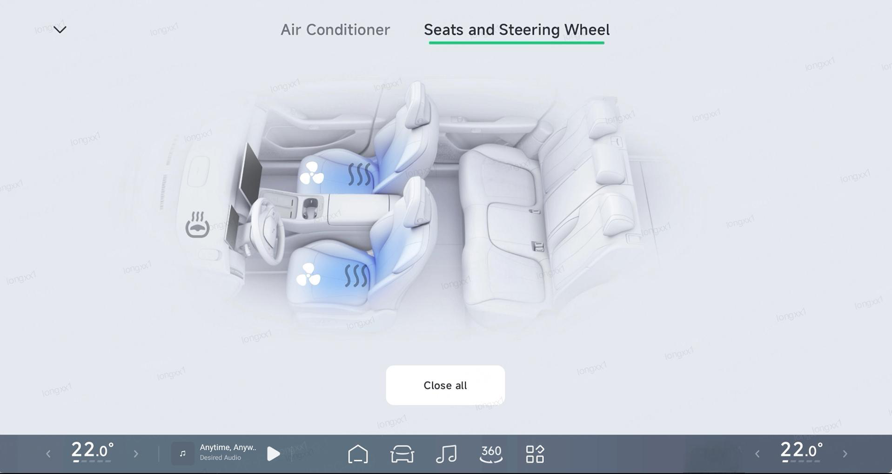
Configuración de Comodidad
Operación
- Puedes elegir el modo de masaje según tu preferencia, y toca para activar la función de masaje del asiento.
En la pantalla de control central, ve a la " →Asiento→Masaje" interfaz, y puedes configurar la función de masaje del asiento.
Interfaz de configuración de la pantalla de control central
Los diferentes modos de masaje corresponden a la duración del masaje y cuando se alcanza el tiempo, el masaje del asiento se apaga automáticamente.
Sugerencias
-
Toca para seleccionar la intensidad del masaje.
-
Toca para habilitar o deshabilitar la función de alivio de presión lumbar del conductor.
-
Toca para seleccionar el modo de alivio de presión lumbar.
Sugerencias
• El Masaje del Conductor Principal y el Alivio Lumbar solo se pueden activar por separado; activar el Alivio Lumbar desactiva automáticamente el masaje cuando el masaje está activo, y activar el masaje desactiva automáticamente el Alivio Lumbar cuando el masaje está activo.
-
Toca para habilitar o deshabilitar la función de masaje del conductor.
-
Toca " " para seleccionar el asiento a ajustar.

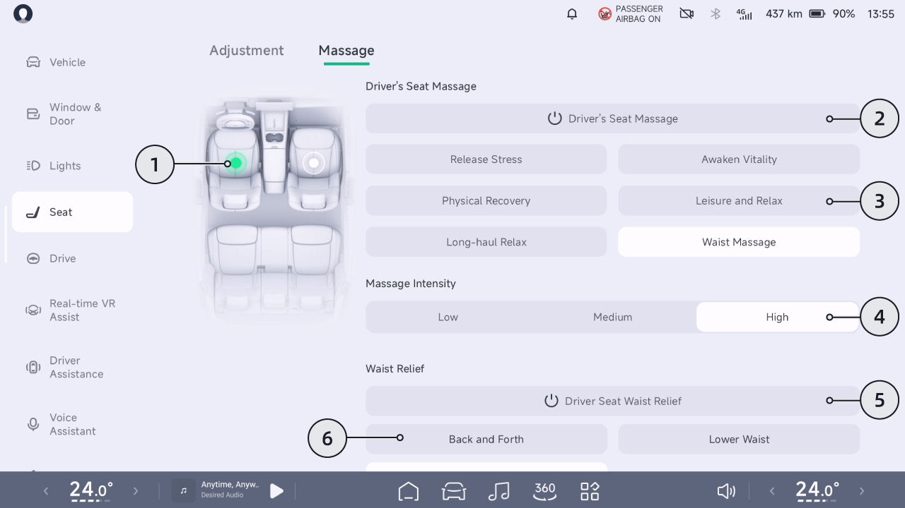
Configuración de Comodidad
• El ajuste lumbar manual interrumpe el modo de alivio lumbar cuando el modo de alivio lumbar está activo.
El sistema de audio del asiento del conductor tiene tres modos:
• Modo Compartido: Los sonidos de navegación, llamadas y medios se reproducen a través del sistema de audio de todo el vehículo.
Audio del Conductor
• Modo de Conducción: Los sonidos de navegación y llamadas se reproducen a través del audio del reposacabezas del conductor, mientras que los sonidos de medios se reproducen a través del sistema de audio de todo el vehículo.
Operación
• Modo Privado: Los sonidos de navegación, llamadas y medios se reproducen a través del sistema de audio del reposacabezas del conductor.
Toca "Cambio Inteligente". El vehículo cambiará automáticamente al "Modo de Conducción" cuando el asiento del pasajero delantero esté ocupado.
En la pantalla de control central, ve a la interfaz " →Sonidos→Altavoz del Conductor" y puedes configurar el modo de sonido del conductor.

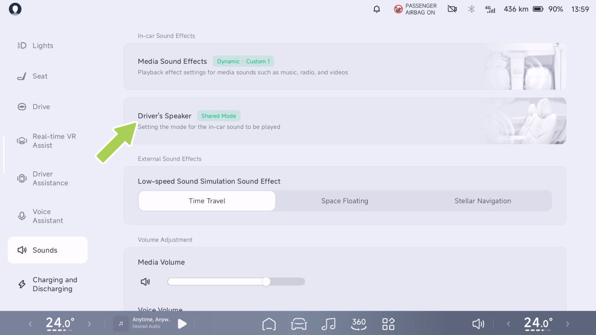
Configuración de Comodidad
Carga Inalámbrica
pantalla parpadee, rebote, etc., si es necesario, se recomienda que el interruptor de carga inalámbrica se apague en la pantalla de control central.
Introducción
En la pantalla de control central, ve a la interfaz " →Carga y Descarga→Fuente de Energía" y puedes habilitar o deshabilitar la carga inalámbrica para el conductor y el pasajero delantero.
El área de carga inalámbrica se encuentra en la parte delantera de la consola. Durante la carga, coloca la pantalla del teléfono móvil hacia arriba y desliza el teléfono móvil hacia la parte inferior del área de carga siguiendo la barra de límite, lo que es conducente a la carga inductiva y la disipación de calor del teléfono móvil. Durante la carga, el icono " " se mostrará en la pantalla de control central.
Precaución
Algunos teléfonos móviles no tienen función de carga inalámbrica; el teléfono móvil colocado en el panel de carga inalámbrica puede causar que la

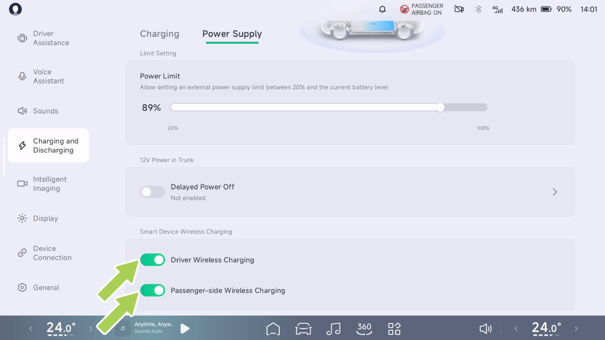
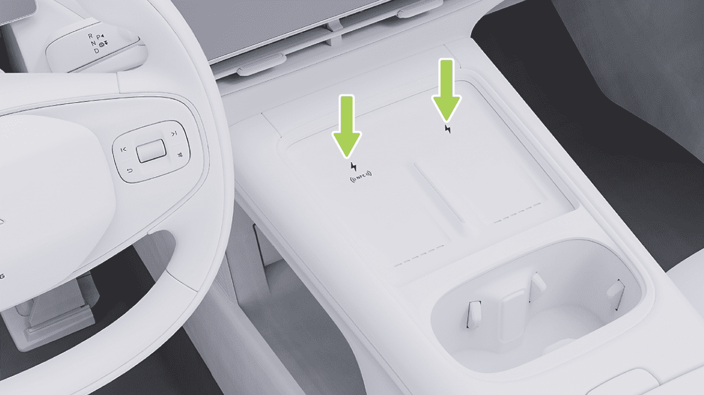
Configuración de Comodidad
• Los teléfonos móviles admiten una potencia máxima de carga inalámbrica de 50W y tienen capacidad de enfriamiento por aire. Puede enfriar el teléfono mediante enfriamiento por aire para mejorar la eficiencia de carga.
advertencia
• Para evitar interferencias entre dispositivos médicos o electrónicos implantables y el sistema de carga inalámbrica para teléfonos móviles, el personal que utiliza dispositivos médicos o electrónicos implantables debe mantener una distancia apropiada del área de carga inalámbrica del teléfono móvil.
• En la pantalla de control central, vaya a "→General→Seguridad y privacidad", y puede habilitar o deshabilitar "Recordatorio de teléfono olvidado". Una vez que se habilita esta función, si el teléfono móvil está cargándose de forma inalámbrica, se activará un recordatorio cuando esté saliendo del vehículo.
• La función de carga inalámbrica de teléfonos móviles puede calentar metal. Asegúrese de que no haya objetos extraños de metal en la parte posterior del teléfono y en el área de carga antes de comenzar la carga. De lo contrario, los objetos extraños de metal pueden calentarse o dañarse, e incluso causar accidentes de seguridad. El material extraño de metal aquí se refiere a otros objetos con componentes metálicos, incluidos pero no limitados a chips, tarjetas magnéticas, etc.
La carga inalámbrica se detendrá en los siguientes casos:
• Cuando el teléfono móvil se coloca en la parte superior del área de carga, puede haber falla de carga o de inducción.
• La carga se detendrá cuando el vehículo comienza a buscar la llave.
• Para teléfonos que no tienen carga inalámbrica, se recomienda tocar manualmente la configuración en la pantalla central para apagar la carga inalámbrica en el área correspondiente y evitar que afecte el uso normal del teléfono.
• El maletero se cerrará con la puerta delantera izquierda desbloqueada y las cuatro puertas cerradas.

Configuración de confort
• Para teléfonos móviles con carga rápida inalámbrica de 50W, el teléfono debe colocarse a lo largo de la barra limitadora en la parte inferior del área de carga, y la parte inferior del teléfono debe estar completamente cubierta para evitar problemas de sobrecalentamiento.
• Si la función de carga inalámbrica no funciona o no funciona correctamente, deje de usarla y comuníquese con el Centro de Servicio de Automóviles XPENG para obtener servicio.
• Es normal que el teléfono se caliente después de una carga prolongada. No deje el dispositivo de carga en el área de carga después de que esté completamente cargado, ya que esto puede causar problemas de sobrecalentamiento.
• La salida del ventilador de enfriamiento de la carga inalámbrica se encuentra en el extremo inferior de la carga inalámbrica. Tenga cuidado de que objetos extraños y líquidos no entren en la salida y afecten el funcionamiento del ventilador.
• No use una carcasa de teléfono de metal, como una que admita carga magnética (MagSafe).
• No derrame agua en el área de carga inalámbrica para evitar que el agua entre en el módulo de carga inalámbrica y dañe los componentes electrónicos.
• Las bobinas de carga inalámbrica externa pueden causar accidentes y deben usarse con precaución.
• Cuando el conductor no esté en el auto, por favor no coloque el teléfono móvil en el auto para cargarlo, para evitar peligros de seguridad.
• Por favor, no coloque objetos pesados en el área de carga para evitar dañar el módulo de carga inalámbrica.
Configuración de Confort
Puertos de Carga y Datos
- Puerto de alimentación de 12V: Tiene una potencia máxima de 180 W.
Introducción
precaución
Puerto frontal de la caja de apoyabrazos central
Está prohibido cargar mediante la conexión de fuente de medios USB; la carga puede causar que la pantalla de control central se reinicie o que la pantalla se quede en blanco.
Puerto trasero de la caja de apoyabrazos central
1. Puerto de fuente de medios USB: se usa para transmitir datos de video de conducción de unidad USB, micrófono, controlador de juegos, etc.
- Puerto de alimentación Type-C: se usa para transmitir datos de video de conducción de unidad USB y cargar dispositivos electrónicos, compatible con protocolo de carga estándar, con una salida de potencia máxima de 60W.
1. El puerto de alimentación Type-C admite una potencia máxima de 15W.
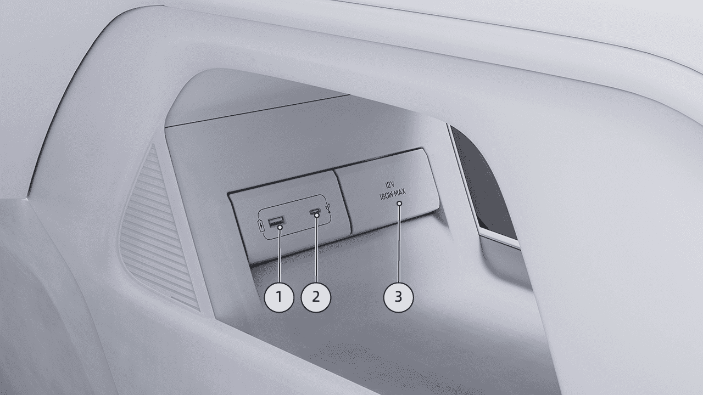
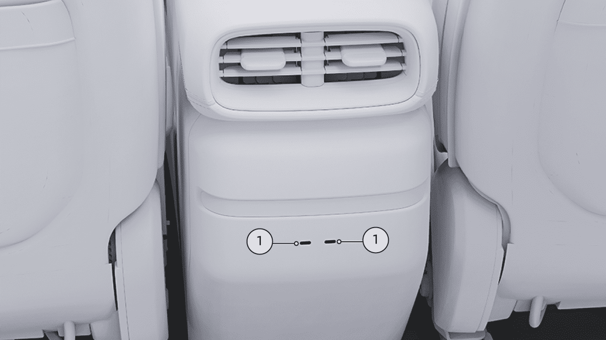
Configuración de Confort
advertencia
Se prohíbe la modificación privada de la interfaz Type-C.
Puerto interno del maletero
En la pantalla de control central, vaya a " →Carga y Descarga→Suministro de Energía" interfaz, y active "Apagado Retrasado". Puede establecer el tiempo de apagado retrasado del suministro de energía de 12V del maletero después de que el vehículo se apague.
Puerto de alimentación de 12V: Tiene una potencia máxima de 180 W.

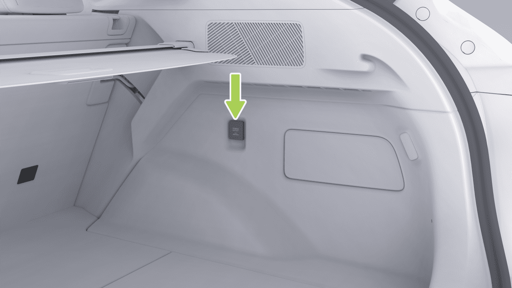
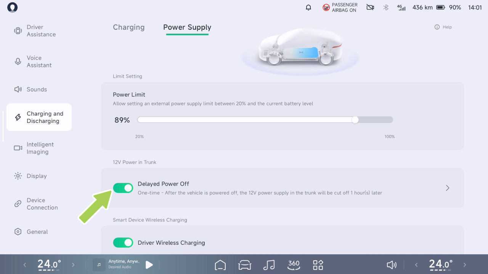
Configuración de Confort
Parasol de carga del maletero
Extracción e Instalación del Parasol de Carga
Uso del Parasol de Carga
– Doble el respaldo del asiento trasero.
– Retire cualquier extremo del parasol de carga y extráigalo.
– Para instalar, primero asegure un extremo del parasol de carga en la ranura de fijación, retire el otro extremo y luego bloquéelo en su lugar.
1. Extraiga el parasol de carga.
- Inserte ambos extremos del parasol de carga en las ranuras de fijación en cada lado del maletero.
No coloque objetos en la persiana cuando esté desplegada, ya que esto dañará la persiana o causará lesiones a los ocupantes del vehículo en caso de colisión.
advertencia
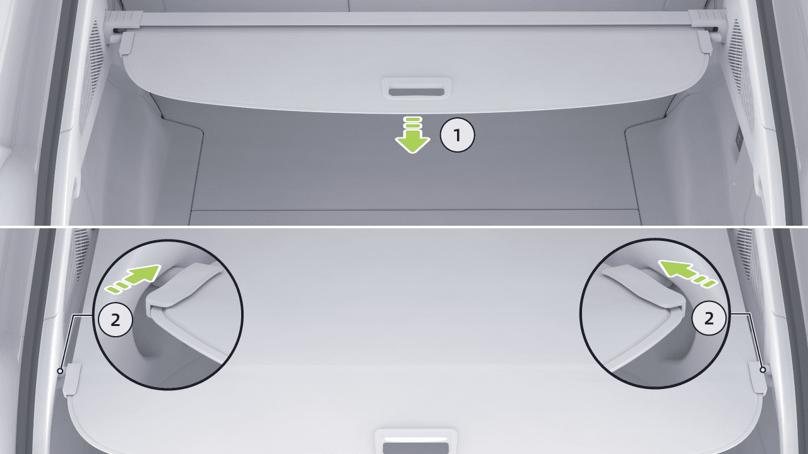
Configuración de Confort
Espacio de Almacenamiento
Caja de almacenamiento de la puerta
Introducción
Caja de apoyabrazos central
La puerta tiene un compartimiento de almacenamiento adecuado para sostener bebidas u organizar artículos.
La consola está equipada con una caja de apoyabrazos central, que se puede abrir presionando el interruptor.
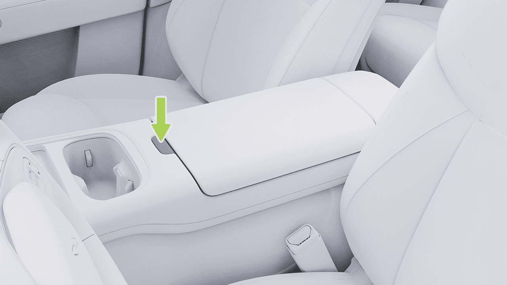
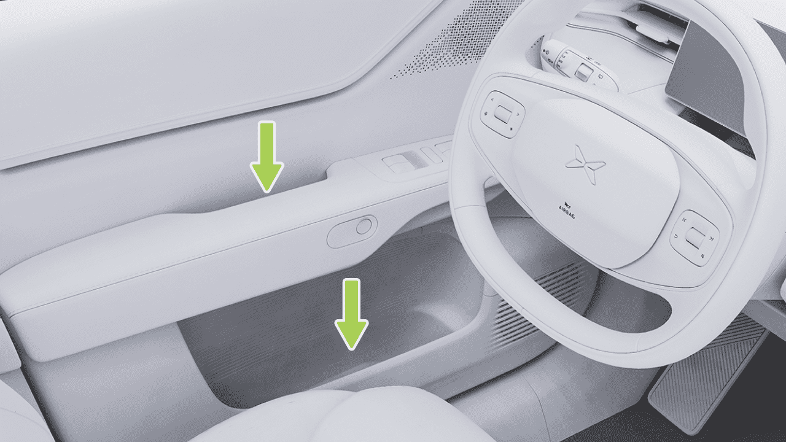
Configuración de Confort
Portavasos de la primera fila
Portavasos Trasero
La consola está equipada con un portavasos para sostener botellas de bebida o tazas.
Después de inclinar el apoyabrazos central del asiento trasero, presione suavemente su sección frontal para revelar el portavasos.
Evite colocar piezas pequeñas y otros desechos al usar el portavasos para evitar que se atasque.
precaución
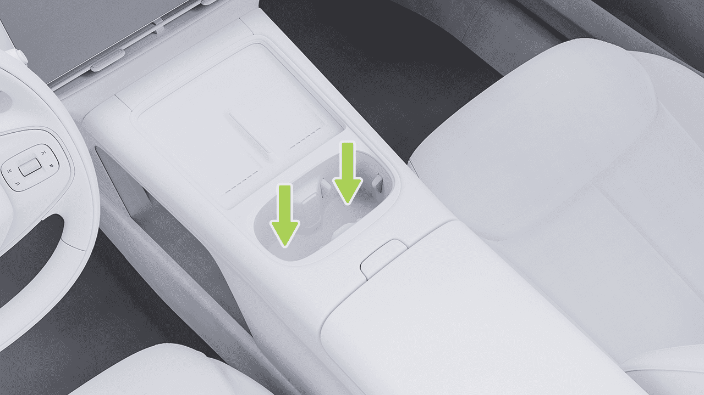
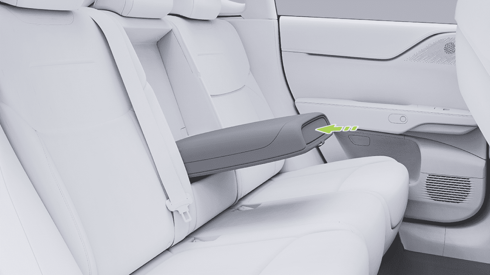
Configuración de Confort
advertencia
Maletero
No coloque bebidas abiertas o tazas en el portavasos mientras el vehículo está en movimiento. Para evitar quemar al conductor y ocupantes del vehículo, o dañar el vehículo y los equipos eléctricos interiores debido a una bebida caliente en la taza.
Bolsillo de mapas
El maletero se puede utilizar para colocar equipaje y mercancías.
precaución
• No almacene artículos frágiles, inflamables, explosivos, etc. en el espacio de carga para evitar incendios, explosiones o daños.
Los bolsillos de mapas se encuentran en la parte posterior de los asientos delanteros para guardar artículos como facturas y revistas.
• Almacene artículos líquidos con un sello hermético para evitar daños al vehículo debido a fugas de fluidos. Limpie si ocurre una fuga.
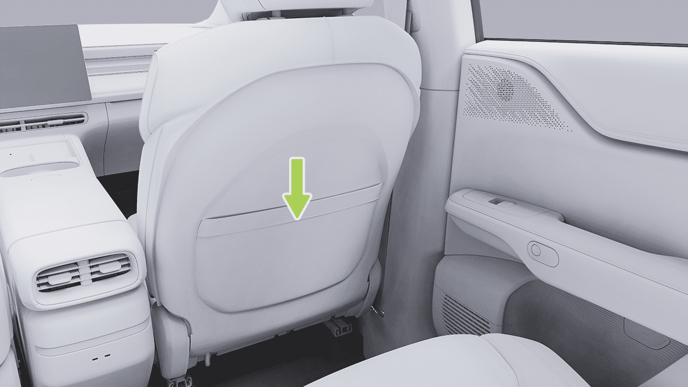
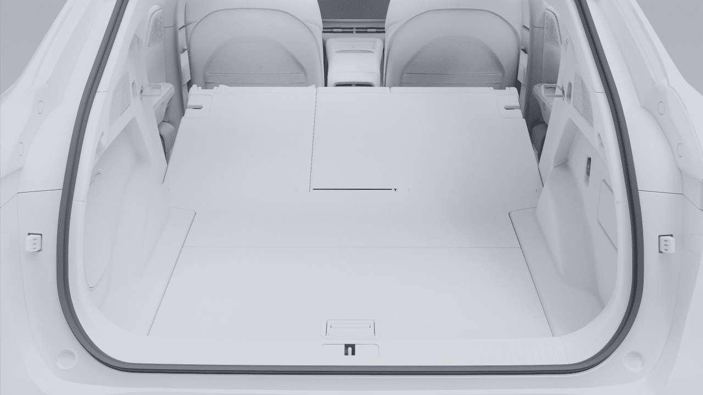
Configuración de Comodidad
• No conduzca el vehículo con carga excesiva para evitar distancias de frenado excesivas debido a la inercia excesiva, lo que podría resultar en un accidente.
instrucciones proporcionadas para la baca, y cumpla con todas las advertencias de seguridad relacionadas.
precaución
Interfaz de Baca de Equipaje
• Los rieles del techo deben verificarse regularmente para asegurar que estén bien ajustados y libres de daños.
• Cuando la baca de equipaje no está instalada, asegúrese de que la tapa esté cerrada en la interfaz.
Modo Remolque*
Introducción
Su vehículo está equipado con la función de remolcar una autocaravana, que solo se puede utilizar después de activar el Modo Remolque en la Pantalla de Control Central. Al remolcar una autocaravana, el conductor debe poseer las calificaciones de conducción necesarias.
La interfaz de baca de equipaje en este vehículo soporta la instalación de una baca con capacidad de carga, con una capacidad de carga máxima de 75kg.
Antes de instalar o usar la baca, revise minuciosamente este capítulo y las
Antes de decidir remolcar una autocaravana, primero debe revisar las regulaciones de vehículos motorizados en su región. Como las regulaciones varían entre regiones, es
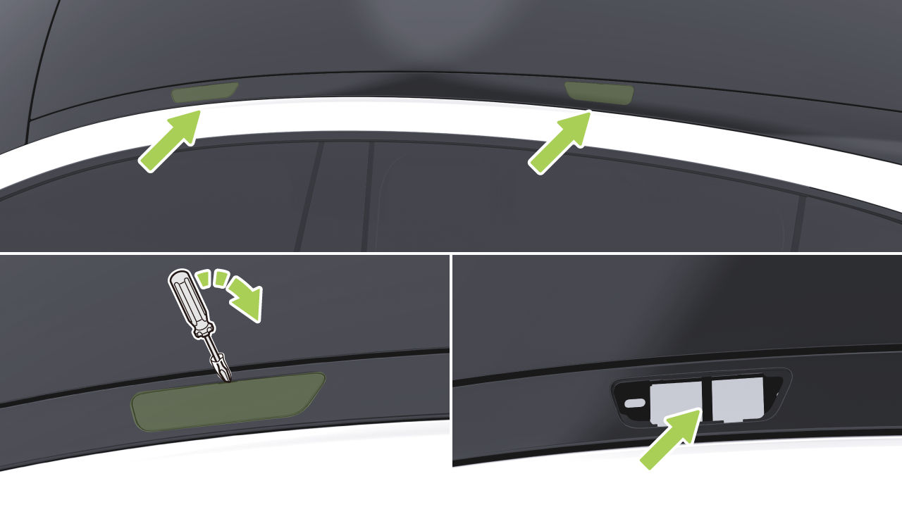
Configuración de Comodidad
esencial seleccionar una autocaravana apropiadamente especificada y consultar con un proveedor de servicio local antes de remolcar.
• Acelere gradualmente y evite aceleración repentina o frenado de emergencia. En superficies de carreteras resbaladizas, tales acciones podrían causar que el vehículo pierda el control por patinaje. Los vientos cruzados y las carreteras irregulares pueden causar balanceo del vehículo, afectando significativamente el control vehicular. En cualquier caso, tan pronto como note un ligero signo de balanceo del vehículo, sostenga el volante firmemente con ambas manos e inmediatamente reduzca la velocidad lentamente. No intente eliminar el balanceo aumentando la velocidad.
• Al remolcar una autocaravana, cumpla con las leyes y regulaciones locales. La modificación no autorizada está estrictamente prohibida.
precaución
• Durante el período de rodaje de un vehículo nuevo, no remolque una autocaravana.
• Cuando no esté remolcando una autocaravana, retracte el dispositivo de tracción.
• No se permite remolcar una autocaravana equipada con un sistema de freno de servicio eléctrico.
• Intenta evitar Combos donde el vehículo remolcador está descargado mientras el remolque está cargado. Si es inevitable debido a una distribución desigual de la carga, reduce tu velocidad de conducción.
Instrucciones de conducción
• Al remolcar un remolque, la distancia de frenado del vehículo aumenta. Por lo tanto, aumenta la distancia de conducción respecto al vehículo que va adelante.
Remolcar un remolque puede afectar la manejabilidad y el rendimiento de frenado de tu vehículo. Para garantizar un remolque seguro y proteger la seguridad tuya y la de tus pasajeros, sigue estas recomendaciones de conducción:
Configuración de comodidad
Indicadores en el panel de instrumentos
Apertura y cierre
El arnés de cableado del remolque funciona normalmente, al igual que los sistemas de suspensión, programa de estabilidad electrónica y gancho de remolque.
El arnés de cableado del remolque funciona normalmente; sin embargo, fallas en la suspensión, programa de estabilidad electrónica o gancho de remolque pueden impedir que el modo de remolque funcione correctamente.
El modo de remolque no está disponible debido a fallas en el arnés de cableado del remolque, lámpara de señal del remolque, suspensión, programa de estabilidad electrónica y gancho de remolque.
Cuando el vehículo está en marcha P, en la pantalla de control central, ve a la interfaz " →Vehículo" y puedes activar o desactivar "Modo remolque".
• Se requiere una segunda confirmación cuando tanto el modo barra de remolque como el modo remolque se activan y debe realizarse en marcha P.
precaución


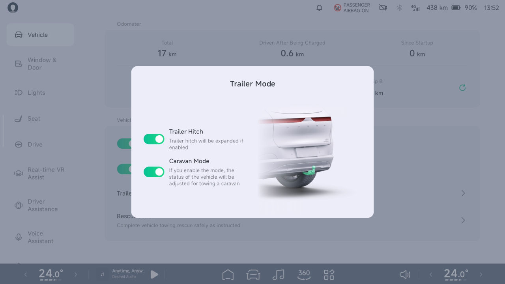
Configuración de comodidad
• El interruptor de pantalla central no está disponible durante el movimiento de la barra de remolque y se devuelve al servicio cuando está completamente extendido o retraído.
precaución
• Cuando la barra de remolque está activada, ninguno de los sistemas de asistencia de conducción, excepto las funciones AEB y FCW, puede activarse. Cuando la barra de remolque está completamente cerrada, las funciones relacionadas con la asistencia de conducción vuelven al estado anterior a la apertura de la barra de remolque.
Al remolcar un vehículo, el modo de remolque debe estar activado; de lo contrario, el vehículo se dañará.
APAGADO
Después de desconectar la autocaravana del gancho de remolque y desconectar el conector eléctrico, presiona el interruptor del gancho de remolque en la pantalla de control central para salir simultáneamente del modo de remolque y retraer el gancho de remolque.
El modo de remolque no se activará cuando:
• La barra de remolque no se abre.
• El vehículo está en marcha que no es P.
• Falla de suspensión, falla de función ESP.
• Cuando la suspensión está en modo de servicio y el modo de nivelación de suspensión está activado.
• Cuando se calibra el sensor después de la venta, modo de bloqueo.
• Cuando el modo de elevación o modo de transporte marítimo está activado.
Configuración de comodidad
Conector de conexión eléctrica
conector eléctrico, que puede causar daño debido a la entrada de agua en el conector.
El conector eléctrico está montado en el gancho de remolque. Después de activar el interruptor del gancho de remolque en la pantalla de control central, el conector se extiende junto con el gancho de remolque. Después de abrir la cubierta protectora, está listo para usar.
El conector de conexión eléctrica equipado en este vehículo es un conector de 13 núcleos. La toma de corriente cumple con la norma ISO 11446:2004. Las funciones específicas de cada pin son las siguientes:
precaución
Número de pin Color Función
Cuando el conector eléctrico no está conectado a la interfaz del remolque, no utilice una pistola de agua a alta presión para limpiar
Alambre amarillo Luces de giro izquierdo
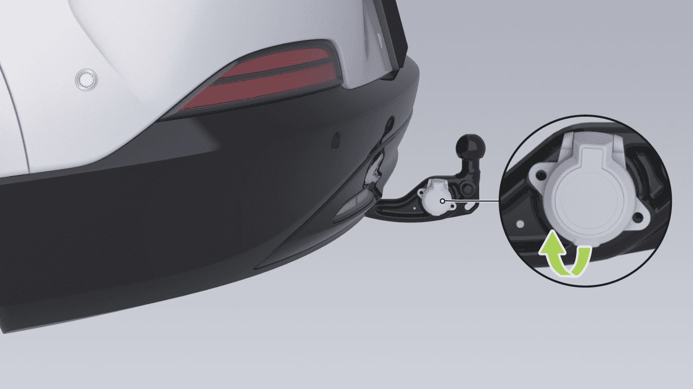
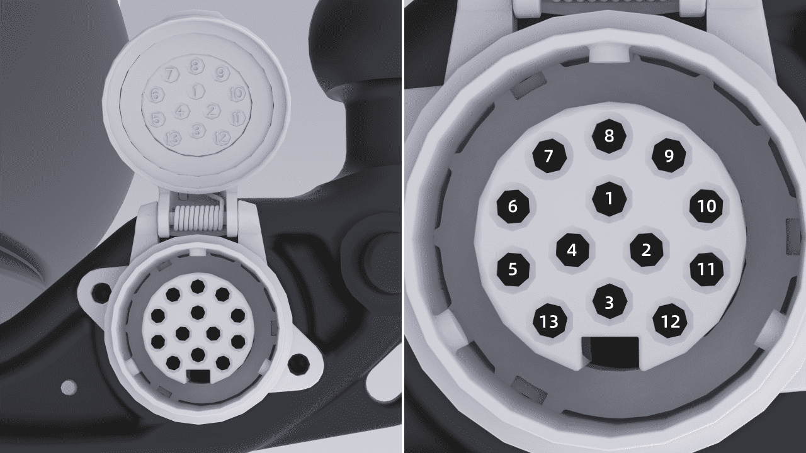
Configuración de Confort
Alambre azul y blanco Luz antiniebla trasera o luces de marcha atrás
Alambre de espera
Alambre blanco Cable de tierra principal 1-8 pin
Alambre verde Luces de giro derecho
Línea roja y blanca
Cable de tierra de 9 pines
Alambre marrón Luces de circulación derechas
Alambre rojo Luces de freno
Espejo Retrovisor y Soporte
Alambre negro Luz de circulación izquierda (puede combinarse con Pin 5)
Los espejos laterales del tractor deben cumplir con los estándares normativos. Si no son adecuados, instale espejos laterales de remolque apropiados.
Alambre rosa Luces de marcha atrás
Alambre naranja Hacia la batería
Alambre gris Batería o refrigerador
Alambres negro y blanco
Cable de tierra de 10 pines
Configuración de Confort
Artículo Datos
Masa de remolque máxima permitida (con freno) [kg]
1500
Masa de remolque máxima permitida (sin freno) [kg]
Carga de lengüeta máxima [kg]
Tipo I
Adhiera a la superficie de los espejos laterales.
Dimensiones generales máximas (largo × ancho × alto) de combinación automóvil- remolque [mm]
Tipo II
Fije el clip del soporte al marco de forma segura.
1450025504000
Parámetros Técnicos
Límites de tamaño (largo × ancho × alto) de remolques de eje central permitidos para remolque [mm]
La capacidad de remolque del vehículo depende de sus especificaciones, carga, condiciones del camino y características del remolque. Para garantizar una conducción segura, evite el exceso de velocidad o sobrecarga. Consulte la tabla a continuación para parámetros detallados.
1200025504000
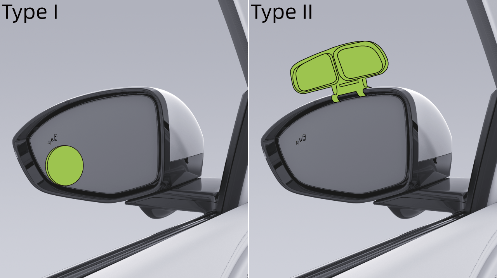
Configuración de Confort
Límite de tamaño máximo del voladizo trasero del remolque [mm]
3500
Masa de remolque máxima permitida
Conector de conexión eléctrica de interfaz "estándar" de 13 núcleos conforme a la norma ISO11446:2004
Enganche de bola de remolque
Cumple con los requisitos de tamaño de bola de remolque clase A de la regulación ECE R55
La masa de remolque denota el peso combinado del remolque y su carga.
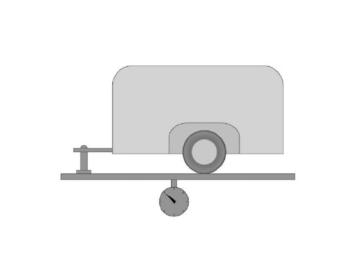
Configuración de Confort
Carga de lengüeta máxima
• Lámparas de posición izquierda/derecha: 24W.
• Lámparas de señal de giro izquierda/derecha: 24W.
• Luz antiniebla trasera: 42W.
• Luz de marcha atrás: 42W.
• Luz de freno: 42W.
Precauciones de Conducción
Comenzar a Conducir
Antes de conducir, asegúrese de que la presión de los neumáticos, las luces y los dispositivos de conexión del tractor y del remolque sean normales. Después de conectar el remolque, active el "Modo Remolque" en la pantalla de control central.
Cargue el remolque de forma segura, asegurando que esté bien asegurado en su lugar. Además, verifique que el remolque esté nivelado; de lo contrario, absténgase de conducir el vehículo.
La carga de lengüeta máxima representa la carga vertical máxima permitida en el punto de conexión del enganche del remolque.
Limitación de potencia de las luces traseras del remolque
Acelera gradualmente y evita aceleraciones súbitas o frenadas de emergencia. En superficies de carretera resbaladizas, tales acciones podrían causar que el vehículo pierda el control debido al deslizamiento.
La potencia de las luces traseras del remolque no debe exceder los valores especificados a continuación:
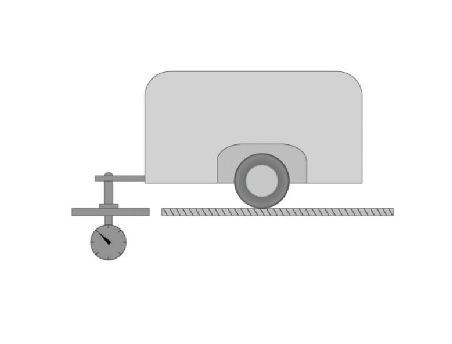
Configuración de Confort
Los vientos cruzados y los caminos irregulares pueden causar balanceo del vehículo, afectando significativamente el control vehicular. En cualquier situación, al notar los más leves signos de balanceo del vehículo, agarra firmemente el volante con ambas manos y reduce gradualmente tu velocidad. Evita intentar contrarrestar el balanceo aumentando tu velocidad.
Marcha atrás
La marcha atrás al remolcar un remolque difiere de la marcha atrás general y es más desafiante. Ejerce particular precaución y practica diligentemente.
Minimiza las instancias donde el tractor está descargado mientras el remolque está cargado. Si es inevitable debido a una distribución de carga desbalanceada, reduce tu velocidad de conducción.
Durante la marcha atrás, sostén la parte inferior del volante con una mano. Gira tu mano hacia la izquierda para dirigir el remolque hacia la izquierda, y gírala hacia la derecha para dirigir el remolque hacia la derecha. Asegúrate de marcha atrás a baja velocidad, y busca asistencia de otros si es posible.
Cuando se remolca un remolque, la distancia de frenado del vehículo aumenta. Por lo tanto, aumenta la distancia desde el vehículo que precede.
Freno
Giros
Al remolcar un remolque, ejecuta giros suavemente, evita golpes o maniobras abruptas, y activa las señales de giro con anticipación. Durante el giro, el radio de giro debe exceder el requerido cuando no se remolca un remolque. Esto asegura que el remolque evite contacto con bordillos, señales de carretera, árboles u otros objetos.
Adelantamiento
Al remolcar un remolque, la longitud combinada del vehículo y el remolque se extiende. Por lo tanto, durante el adelantamiento, cuenta con una distancia de paso más larga para regresar de forma segura a tu carril original.
Configuración de Confort
Conducir en una pendiente
Reduce la velocidad en anticipación al remolcar un remolque en pendientes pronunciadas o extendidas. Determina la velocidad de conducción en función del peso del remolque y la pendiente.
Intenta evitar estacionar en pendientes; si es inevitable, coloca calzos bajo los neumáticos del tractor y del remolque y activa el freno de estacionamiento.
Modo Mascotas
Introducción
Cuando el conductor sale del auto, puede asegurar la seguridad de las mascotas dejadas solas en el auto y te recordará la situación de seguridad dentro del auto. Si hay niños en el auto, por favor asegúrate de que estén acompañados por un adulto.
En la interfaz CID "→Vehículo" para habilitar el modo mascotas.

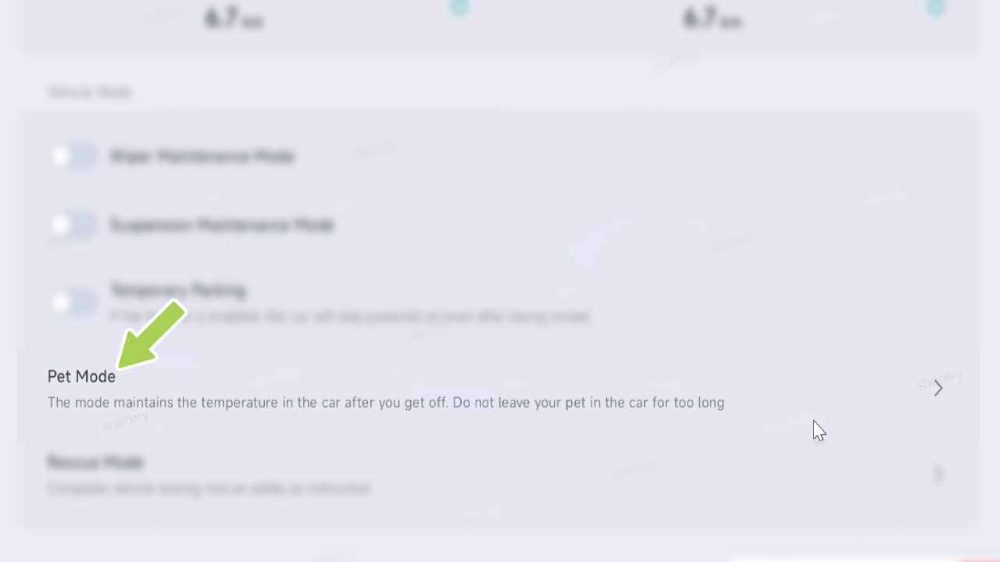
Configuración de Confort
Operación
Cuando el conductor sale del auto, la pantalla de control central mostrará la temperatura de configuración actual del aire acondicionado en el auto para informar a los peatones alrededor que no se requiere rescate.
El modo mascotas solo se puede habilitar cuando el vehículo está en cambio P y la potencia de batería restante es mayor al 20%.
Cuando se activa el modo mascotas, el aire acondicionado se enciende automáticamente en modo AUTO para garantizar una temperatura cómoda dentro del automóvil. Las cuatro ventanas se cierran automáticamente y los bloqueos de las ventanas se bloquean automáticamente.
En la interfaz del modo mascotas del CID, presione prolongadamente el botón "Presionar para salir" para salir del modo mascotas.
Consejos
Cuando el nivel de batería del vehículo es inferior al 5% o la función del vehículo es anormal (como una anomalía del aire acondicionado), el modo mascotas
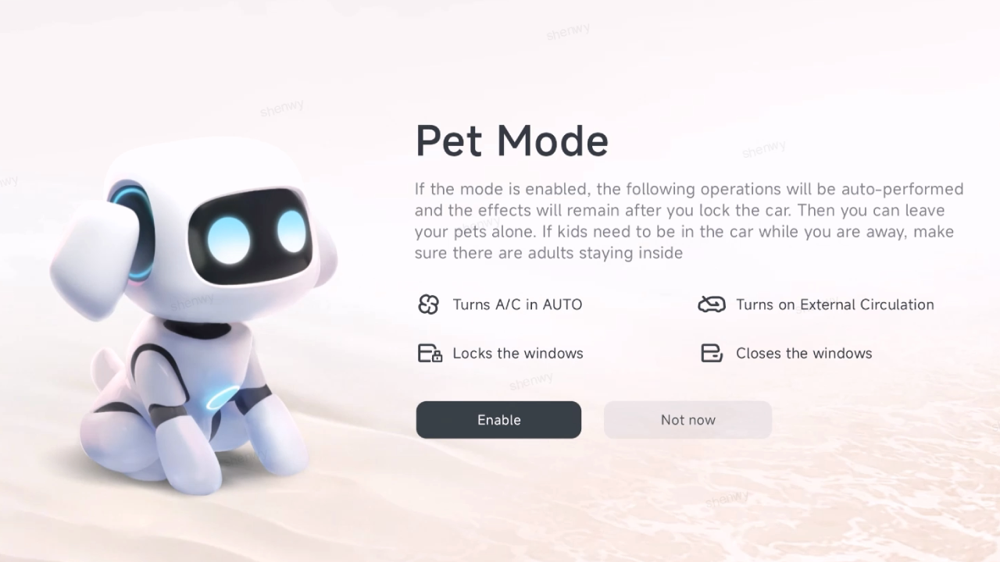
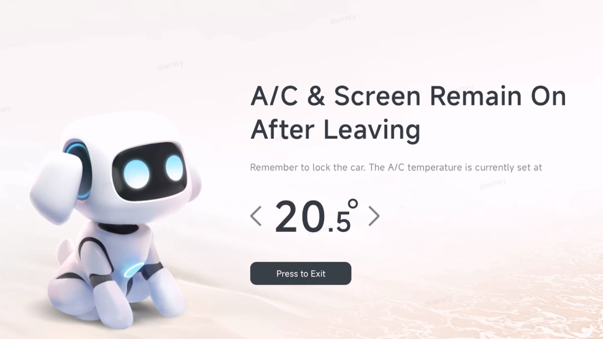
Configuración de Confort
saldrá automáticamente, y luego las ventanas se abrirán un 10% para garantizar la circulación de aire en el automóvil. Al mismo tiempo, la aplicación del teléfono móvil recibirá un mensaje de recordatorio.